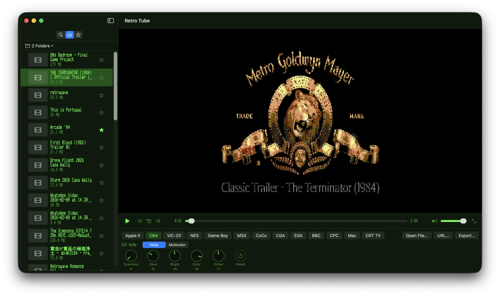
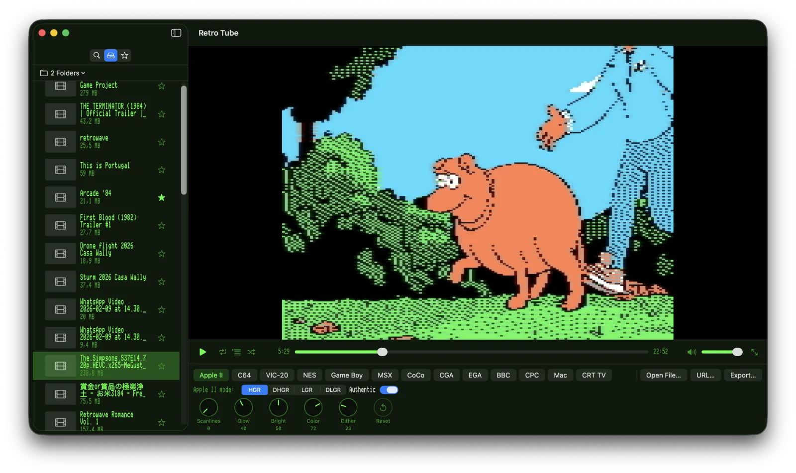
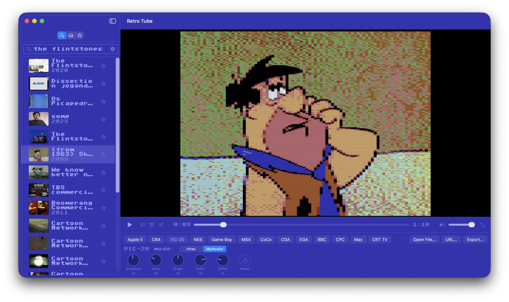
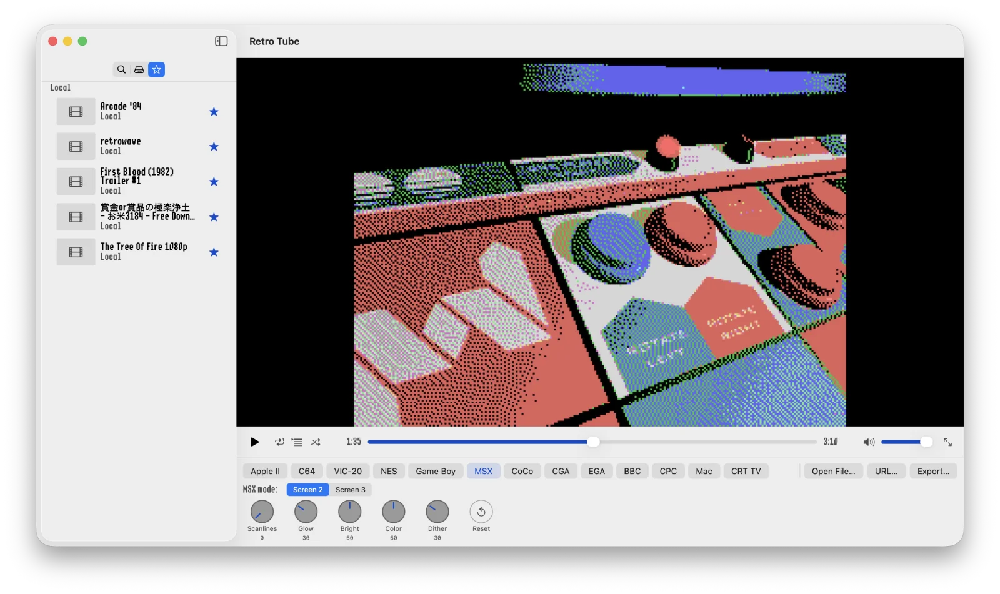
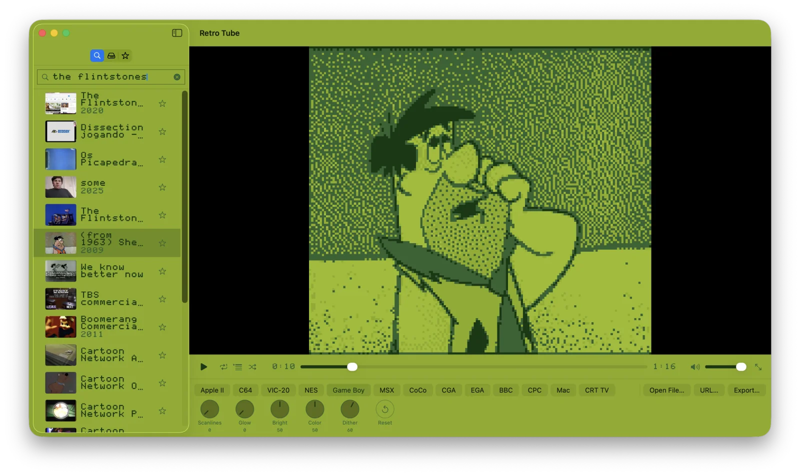
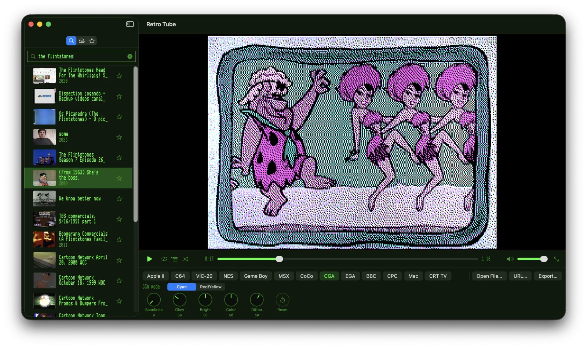

Features
13 Retro Computers
Apple II, Commodore 64, VIC-20, Game Boy, NES, MSX, Tandy CoCo, EGA, CGA, BBC Micro, Amstrad CPC, the original Macintosh and a generic 80s CRT TV — with all of their graphics modes, including NTSC and PAL broadcast resolutions.
Authentic Palettes
Each mode renders to its real hardware palette and native resolution — from 4 shades of Game Boy DMG green to the NES’s 54‑colour set and the Macintosh’s 256‑colour System CLUT.
Authentic Apple II Encoder
Optional hardware-accurate HGR/DHGR encoder reproduces the NTSC artifact-colour rules that real Apple IIs used — complete with composite chroma blur.
CRT Effects
Adjustable scanline intensity, phosphor glow, and dithering strength — all updated live as you play.
Internet Archive Search
Search archive.org from the sidebar. Right-click any result to copy the link or open the source page in your browser.
Local Movie Library
Register one or more folders on your Mac and Retro Tube scans them for playable movies. Folder access is remembered across launches via security-scoped bookmarks.
Bookmarks
Save favourites from either Internet Archive or your local library and come back to them in a single mixed list, sectioned by source.
Retro UI Skins
Re-skin the whole app chrome to look like an Apple II, Apple IIgs, Commodore 64 or Game Boy — including authentic bundled bitmap fonts (PrintChar 21, PR Number 3, Shaston, Pet Me 64).
Drag & Drop
Drop any movie file from Finder or any video URL from your browser’s address bar straight onto the window to start playing.
Rotary Knobs
Scanlines, glow, brightness, colour and dither — controlled by chunky rotary knobs straight off an 80s TV control panel. Drag, scroll-wheel or arrow-key adjust.
Per-System Tunings
Every system remembers its own knob values, sub-mode and toggles across launches. Tweak Apple II to taste, switch to C64, switch back — your Apple II tuning is exactly as you left it. Sensible defaults ship per system; one-click reset is right in the controls row.
Loop · List · Shuffle
Three playback-mode buttons next to play/pause: replay the current video, advance through whichever sidebar list is showing, or jump to a random one when each ends.
Export to MP4
Bake any video through the chosen retro filter and export it as a standard H.264 MP4 with the original audio preserved.
How It Works
Pick a source
Search the Internet Archive, scan a local folder, paste any video URL, or just drop a file onto the window.
Choose a computer
Apple II, C64, Mac, Game Boy, NES, CRT TV — or any of the thirteen supported systems and their graphics modes.
Watch live
Every frame is downscaled to the system’s native resolution, dithered into its palette, and upscaled with crisp pixels and your chosen CRT effects.
Export if you want
Click Export to bake the filter into an MP4 file you can share, with the original soundtrack untouched.
See It In Action
The same kind of modern video, rendered through different retro graphics modes. Each system has its own native resolution, palette, and dithering character.






All Thirteen Systems
Each computer ships with all of its real graphics modes. Switch between them live and watch the same frame re-quantised on the fly. Each system also remembers its own knob settings, sub-mode and toggles across launches.
Six Retro UI Skins
Re-skin the whole app chrome — sidebar, control bar, settings window, even the macOS title bar — to look like a real machine. Bundled bitmap fonts ship under their original free-use licenses.
Requirements
- macOS 14 (Sonoma) or later
- Apple Silicon or Intel
Support
Contact
Questions? Email walter.tengler@gmail.com
Internet Archive
Search results come from the public Internet Archive. All videos remain the property of their respective rights-holders.
Trademark Notice
Apple, Apple II, and Macintosh are trademarks of Apple Inc. Commodore 64 and VIC-20 are trademarks of their respective rights-holders. Game Boy and NES are trademarks of Nintendo Co., Ltd. MSX is a trademark of MSX Licensing Corporation. BBC Micro is a trademark of the British Broadcasting Corporation. Amstrad CPC is a trademark of Amstrad. All other trademarks are the property of their respective owners. Retro Tube is an independent project and is not affiliated with, endorsed by, or sponsored by any of these companies. Retro computer names are used solely to describe the visual style each rendering mode emulates.